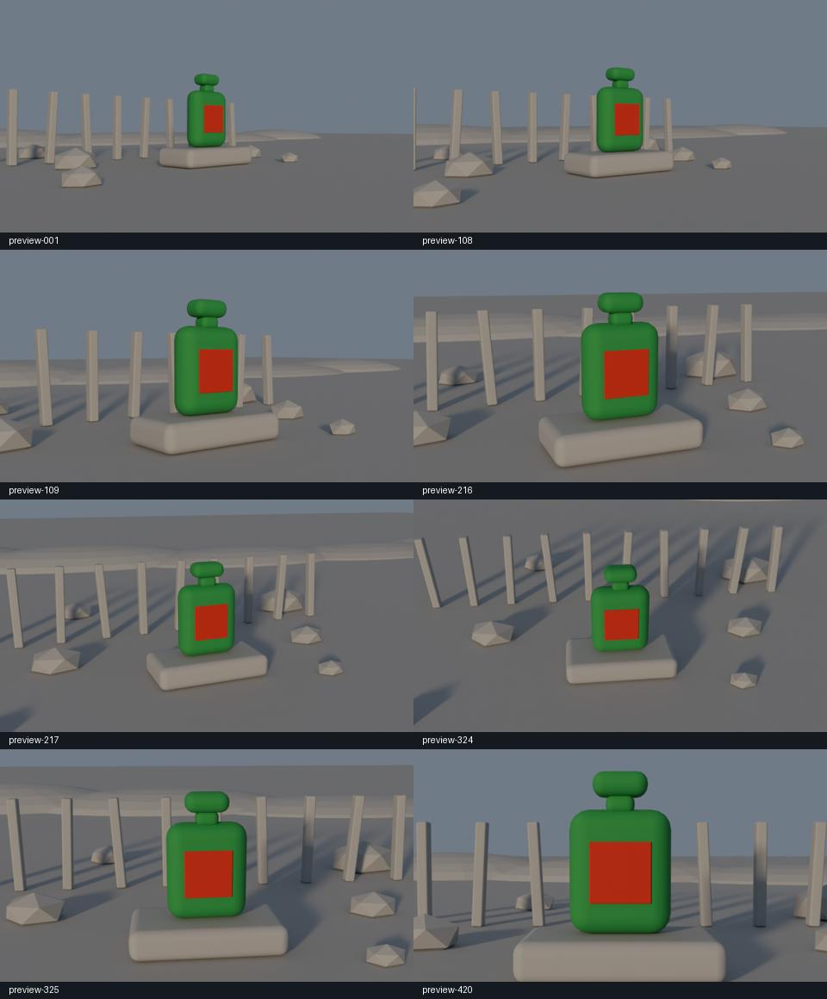

Public edition: account details, private identifiers and desktop screenshots have been removed. Project home and camera demonstration
ATELIER VESPER
AMBRE NOCTURNE
Blender camera guide to Seedance 2.5: finished video and production evidence.
Read the complete behind-the-scenes execution report
Final film
Download final MP4 | Editable Blender guide | Blender guide MP4
Result and limitations
| Item | Result |
|---|---|
| format | 1920 x 1080, 24 fps, H.264 MP4, silent |
| duration seconds | 18 |
| decoded frames | 432 |
| verified cut seconds | [4.5, 9.0, 13.5] |
| final hold seconds | 0.5 |
| hold mean absolute pixel difference max | 0.06335824974279836 |
| timing finish | Native result: 425 frames / 17.708333 seconds. Each shot resampled to 108 frames; final 12 frames hold the final source frame. Nearest-frame sampling, without optical-flow synthesis. |
| production route | Local Blender Python -> rendered guide MP4 -> Higgsfield CLI -> Seedance 2.5 Edit -> local FFmpeg finishing. The Blender live bridge was unnecessary for this batch-rendered scene; generation MCP was not needed for production. |
| credits spent | 366.37 |
| credits breakdown | Pilot 45; full generation 162; horizon correction 159.37. Confirmed against Higgsfield transactions. |
| visual review | 18 sampled frames plus full-resolution final hero; technical checks decode all 432 frames. Browser rendering of the HTML report was not verified. |
| sha256 | cbc9f519d937f4ec2ad69746d4dd56dc648038ca2d3c7d055fec43eb11ee09f7 |
Frame review

Blender guide

Guide: 1920 x 1080, 24 fps, 432 frames, 18 seconds. Minimum computed bottle frame border: 8.63%. Fixed world-space bottle transforms checked on all frames. Ray checks verified camera-to-product sightlines; numerical validation does not certify every possible collision or exact screen-space motion matching.
Proxy mapping
| Guide | Intended final element |
|---|---|
| Green bottle + red label | Approved clear-glass amber perfume bottle, ivory label, gold cap |
| Low grey support | Weathered driftwood |
| Ten post proxies | Timber posts with preserved parallax |
| Rock blocks | Dry stones |
| Low ridge | Dune with marram grass |
| Grey ground | Dry rippled beach sand; no ocean |
Production files
- seedance-final-prompt.txt
- seedance-pilot-prompt.txt
- blender-validation-summary.json
- camera-validation.json
- blender-guide.metadata.json
- final.metadata.json
- final-qa.json
First full model output (private working artifact; not distributed) | Corrected model output before timing finish (private working artifact; not distributed) | Exact timing map
Pre-flight report (historical checks) | Blender build script
The .blend is the greybox camera guide, not the photoreal generated scene. The final video was generated from reference pixels; it does not contain editable 3D geometry.